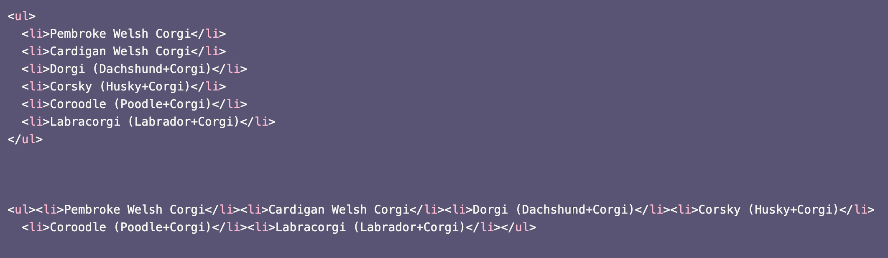

HTML Basics
Welcome to HTML Basics!
Before we start building a basic web page, let’s discuss some important points.
HTML stands for HyperText Markup Language.
We use HTML to create the structure of a website and its different web pages. (Remember that a website is made of different web pages, but not vice versa.)
FUN FACT: If you’re using Google Chrome, right-click on a web page and choose "View page source." You’ll see the web page’s source code!
But wait. Why should I even learn HTML?
In addition to creating websites with HTML, you can also use this markup language to edit other things, like newsletters and blog templates. Future workshops will teach you how to use CSS and JavaScript alongside HTML so that you can make more dynamic and interactive websites.
All right, let’s start learning about elements!
HTML is made up of elements – we can’t build our basic web pages with them.
- Elements are made up of tags and content. Remember that content (text, images, videos, etc.) goes inside opening and closing tags. We use opening(<) and closing(>) angle brackets for tagss.
- Remember to include a forward slash (/) in your closing tag or else the rest of your elements will be affected!
<p>I love HTML!</p>
In this example, we have <h3>, our opening tag. (h3 means Heading 3. It will make your text the web page’s main headline i.e., bigger than the rest of the text on your page.)
Our content is the sentence:
I love HTML!
</h3> is our closing tag.
If we don’t include the forward slash in the closing tag, everything we write after "I love HTML!" will look like this:
I love HTML! Everything I write after this is also yellow!
Remember that we have tags for different headings and sub-headings that can change the size of your text.
The smaller the number, the bigger the text.
<h1> looks like this.
<h5> looks like this.
Other important tags include <p></p> (to make a paragraph), <ol></ol> (to make an ordered list),
<em></em> (to make your text italic), <strong></strong> (to make your text bold),
<u></u> (to underline your text), and <ul></ul> (to make an unordered list).
We’ll talk about these later on.
And now, time to code!
What we’ve discussed so far was just a brief overview of HTML. Now, let’s follow these steps to start building our own web pages and learning as we go.
1. Open the application Atom and create a new file. Name it index.html and save it. (Remember, we use the extension .html for HTML files.)
2. To make it clear to web browsers that we are using HTML, we need to add the document type declaration <!DOCTYPE html>. This instruction will ensure our web pages’ elements load properly.
<!DOCTYPE html>
3. Type <html> and </html> under <!DOCTYPE html>. Everything we want to include in our web page will go in between them.
<!DOCTYPE html>
<html>
</html>
4. Add lang="en-US" after html so it’s clear to web browsers that our code is using U.S. English.
<!DOCTYPE html>
<html lang="en-US">
</html>
5. Add <head> and </head> to your code. Important information (aka "metadata") about your web page will be included here, such as the title of your web page. Remember that this information won’t show up on your web page!
6. Type <title> and </title> after <head>. Think of a title for your web page, then add it between <title> and </title>.
<!DOCTYPE html>
<html lang="en-US">
<head>
<title>All About Corgis</title>
</head>
</html>
7. Let’s check what we have so far using a web browser. Click your HTML file and notice that the title of your web page shows up on one of your web browser’s tabs!
8. Now, let’s get back to our code. Before we move on to the main content of our web page, we need to include some more important elements.
<meta charset="UTF-8">
<meta http-equiv="X-UA-Compatible" content="ie=edge">
We have to add these elements underneath <title>All About Corgis</title>. Why? Well, <meta charset="UTF-8"> is great because it tells your web browser convert typed characters into machine-readable code. <meta http-equiv="X-UA-Compatible" content="ie=edge"> is important because if you’re using Internet Explorer (IE), your content will be displayed using the highest version of IE available.
9. Okay, now that that’s out of the way, let’s add some fun content to our web pages! First, let’s start with adding opening and closing body tags to our code after </head>. Everything in between these <body> and </body> tags will be visible when viewing your web page.
<!DOCTYPE html>
<html lang="en-US">
<head>
<title>All About Corgis</title>
<meta charset="UTF-8">
<meta http-equiv="X-UA-Compatible" content="ie=edge">
</head>
<body>
</body>
</html>
What are some things we can add to the body?
Headings
As previously mentioned, we can include headings of different sizes to our web pages. Using headings can be a great way to organize our content and draw attention to certain sections of a web page.
We use <h1> for main headings, and <h2> to <h6> are for subheadings. The smaller the number, the larger the text.
h1
h2
h3
h4
h5
h6
Try adding one main heading and at least one subheading to your web page!
Paragraph and Line Breaks
<p></p> are for paragraphs. <br> is for line breaks (remember, there’s no closing tag for this one!)If you have a large block of text or even a line of text that you want to include in your web page, you can use <p>
<p>According to Welsh legend, the corgi is an "enchanted dog" favored by fairies and elves.</p>
If you want to add a single space between lines of text, you can use <br>
Remember that <br> is a self-closing tag, so you don’t need to type </br>!
<p>Queen Elizabeth II has had more than
<br>30 corgis in her lifetime. She currently has two dorgis
<br>(corgi/dachshund mixes) named Candy and Vulcan.</p>
will show up as:
Queen Elizabeth II has had more than
30 corgis in her lifetime. She currently has two dorgis
(corgi/dachshund mixes) named Candy and Vulcan.
Lists
There are two kinds of lists we can make using HTML: unordered lists and ordered lists.
Unordered lists <ul>
To add bullet points to a list, we use the tag <li> for each item.
- <ul>
- Pembroke Welsh Corgi
- Cardigan Welsh Corgi
- Dorgi (Dachshund+Corgi)
- Corsky (Husky+Corgi)
- Coroodle (Poodle+Corgi)
- Labracorgi (Labrador+Corgi)
<li>Pembroke Welsh Corgi</li>
<li>Cardigan Welsh Corgi</li>
<li>Dorgi (Dachshund+Corgi)</li>
<li>Corsky (Husky+Corgi)</li>
<li>Coroodle (Poodle+Corgi)</li>
<li>Labracorgi (Labrador+Corgi)</li>
</ul>
On your web browser, this list will look like this:
Ordered lists <ol>
To add numbers to a list, we also use the tag <li> for each item. We can use numbered lists for various reasons, from ranking items to showing the steps of a procedure or process.
<h2>Why corgis are the best dogs:</h2> <ol> <li>Corgis love people</li> <li>Corgis love exercise</li> <li>Corgis are happy, active dogs</li> <ol>
On your web browser, this list will look like this:
Why corgis are the best dogs:
- Corgis love people
- Corgis love exercise
- Corgis are happy, active dogs
Links
To include a link to another web page or website, we use <a href=""> and </a>. We include the full link between the quotation marks, and we write the clickable text between the closing angle bracket of <a href=""> and the opening angle bracket of </a>.
<a href="https://corgithings.com/"> Click here to buy Corgi things for Corgi people!</a>
The output will look like this:
Click here to buy Corgi things for Corgi people!
Images
To add an image to your web page, you need the <img> tag. Like <br> (the line break tag), <img> is a self-closing tag.
You also need to include src="", which is an attribute that determines where your image comes from. If you want your image to be from an online source, you can copy + paste the image's link.
<img src="https://i.pinimg.com/474x/ee/6b/4a/ee6b4aa13fb636d1f97050906a5b4dcf.jpg">

If you want to include your own image, save the image in the same folder as your index.html file. Include the name of your image, and make sure to include the image’s extension (such as .png or .jpg).
<img src="cutecorgi.jpg">
To make our web pages more accessible, add alternative text by writing a short description of what the image is. Screen reading software, for example, will be able to inform your website viewers (such as those who are visually impaired) what the image is about.
Having alternative text is also useful when your website viewers aren’t able to fully load all the contents of your web page. They can move their cursor over any areas where the images haven’t loaded and read what you’ve written for the alt attribute.
To add the alt attribute, type alt="" after you indicate the source of your image.
<img src="cutecorgi.jpg" alt="A cute corgi">
One last thing!
Take a look at your code. Is it easy to read? Do you think it could be organized in a better way?
When you code, remember that it’s best practice to use indentation and whitespace.
Having neat, organized code is helpful when you or other web developers want to go through your code.
Web browsers don’t follow the spacing of your code (that’s why we have tags such as <br>), so you can include various indents and line spaces that will never show up on your web page.
Which example is easier to read?
Definitely the first example. Why? Because there’s more than one line of code! Nothing’s squished together.
Also keep in mind that A uses indentation (which you can also use by hitting the space and tab keys). Anything that’s nested in something (such as the <li> tag in the <ul> tag) should be indented.And that’s it! Now you can make a simple web page. In our next workshop, we’re going to learn how to make our websites look more aesthetic by using CSS (Cascading Style Sheets).